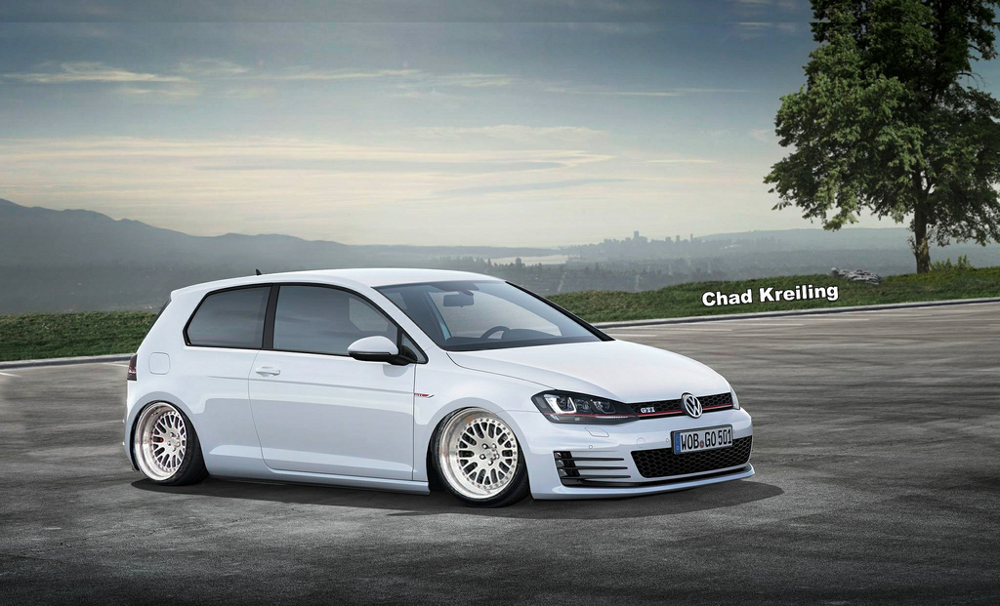
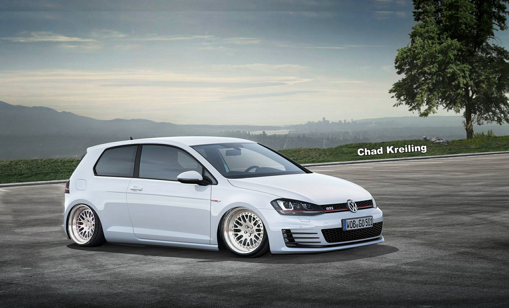
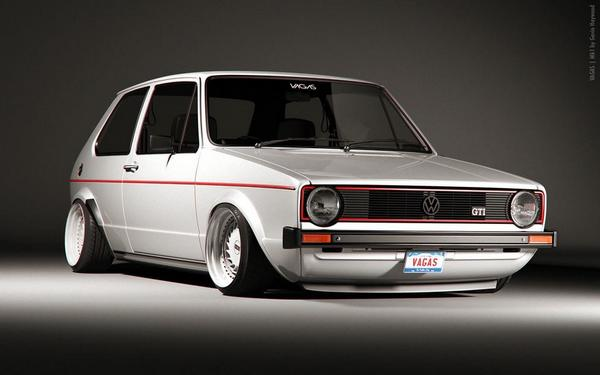
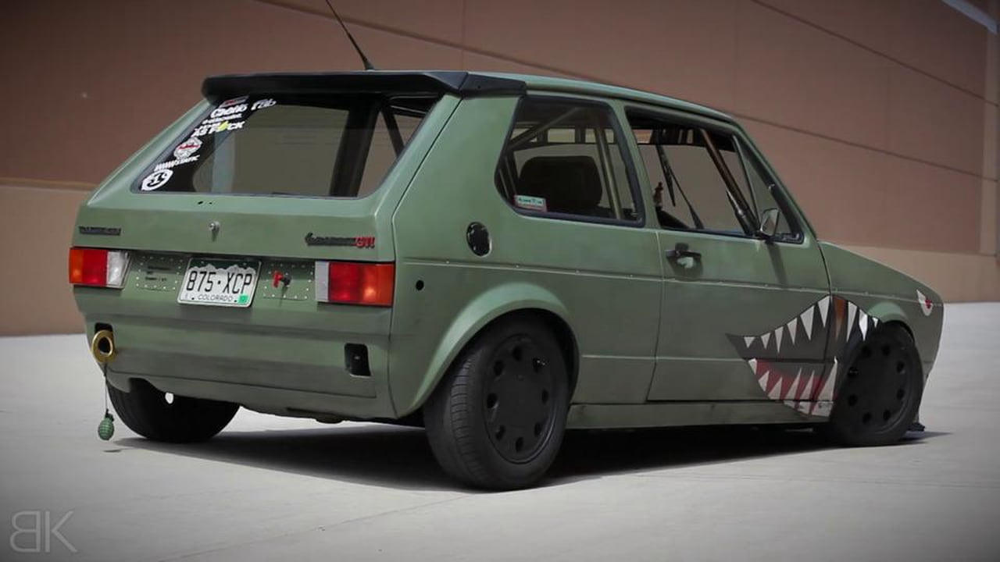
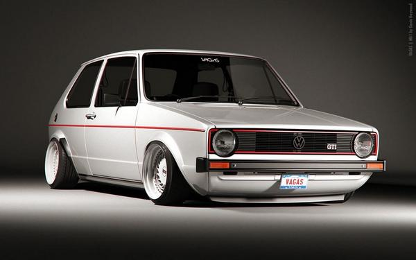
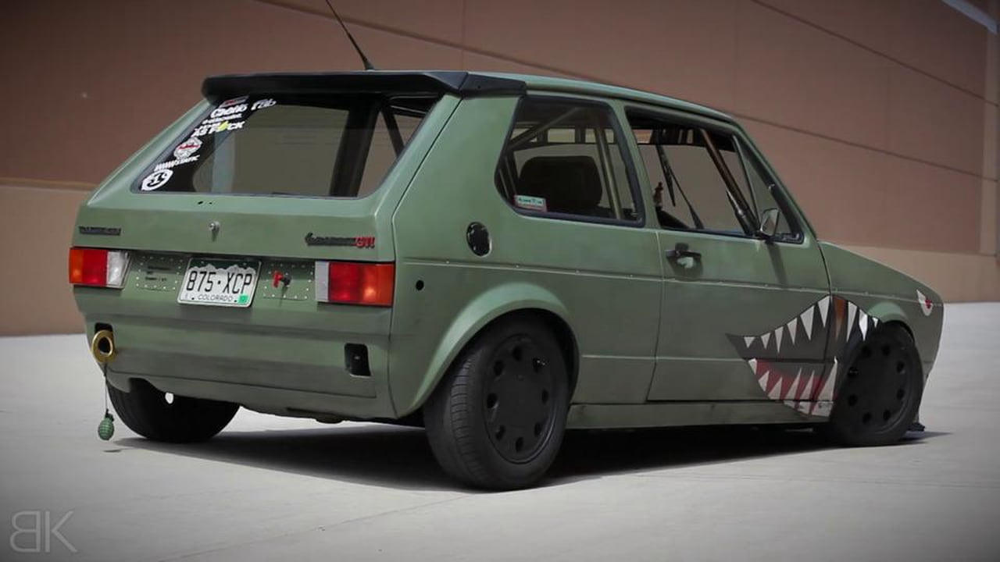

The Volkswagen Golf Mk6 (or VW Typ 5K) is a compact car, the sixth generation of the Volkswagen Golf and the successor to the Volkswagen Golf Mk5. It was unveiled at the Paris Auto Show in October 2008. Volkswagen released pictures and information on 6 August 2008, prior to the official unveiling. The vehicle was released to the European market in the winter of 2008. Major investments have been made in production efficiency, with a claimed productivity improvement at launch of nearly 20% in comparison with the previous model, and further gains planned for the next twelve months.
 



 


